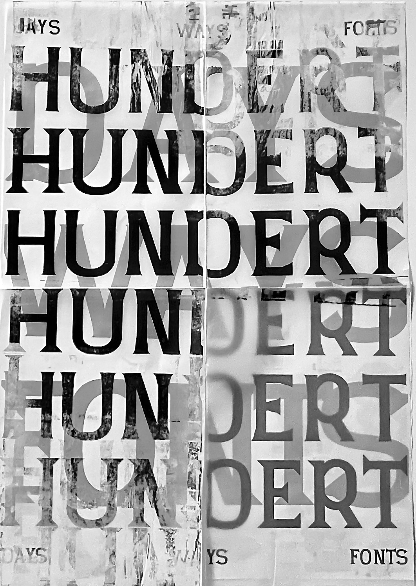

Radical Care
These Flyers were created as advertisement for a soli party. The purpose of the party was to fund money for a person that is in need of money for medicine.
These Flyers were created as advertisement for a soli party. The purpose of the party was to fund money for a person that is in need of money for medicine.
In the course Hope you like it by Heike Grebin we coded moving posters mostly with html and css. This was my first time coding so it was kind of overwhelming. I tried to translate the overwhelm of coding into the content of the posters.

We had a workshop about the transformation of type where we had to transform type by physically doing something with it. I ended up burning a foil with a lighter.

This poster was created at the colab at my campus. Our Type Design Class had an WIP Exhibition and needed posters to exhibit. We tested if you can print a folded a1 sheet of transparent paper at the university. It didn´t work, because the printer ripped the paper in the middle and we didn`t get to the last fourth of the poster so we taped the testsheet behind the transparent poster. This poster was created with the font: Quadratur

I experimented with alternate printing methods and came up with the idea to lay a paintsoaked flower or branch on a sheet of paper and then roll over it with a roller made for lino-printing. Due to the pressure the flower offsets itself and moves around.


Experimental riso printing.